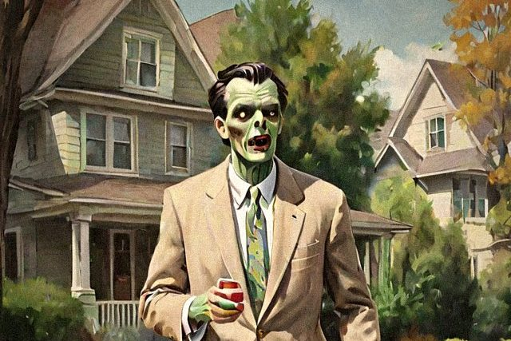

Chapter One · Skills 01–06There Goes the Neighborhood
Recognizing the signs that the folks next door have turned
- Noticing That Mr. Hale Has Turned
- The Milkman Who Only Says 'Brains'
- Telling a Zombie From a Neighbor Before Coffee
- When the Bridge Club Comes Back Different
- Taking the Morning Paper From a Zombie Paperboy
- Breaking the News to the Family Over Supper